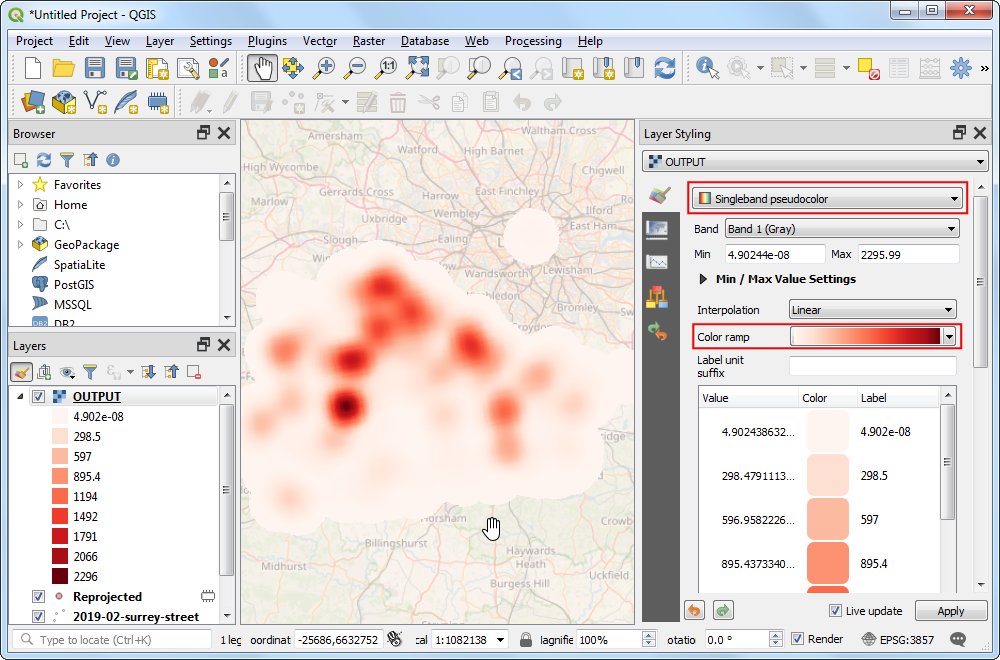

Heatmaps maken (QGIS3)¶
Heatmaps zijn een van de beste gereedschappen voor visualisatie van puntgegevens met een hoge dichtheid. Heatmap is een techniek van interpolatie die handig is bij het bepalen van de dichtheid van invoerobjecten. Heatmaps worden heel vaak gebruikt voor het visualiseren van gegevens over criminaliteit, verkeersongevallen, dichtheid van huizen etc. QGIS heeft een renderer voor heatmap die kan worden gebruikt voor het opmaken van een puntenlaag en een algoritme voor Processing Heatmap (Kernel Density Estimation) dat kan worden gebruikt om een raster uit een puntenlaag te maken.
Overzicht van de taak¶
We zullen werken met een gegevensset van misdaadlocaties in Surrey, UK en een heatmap maken voor het visualiseren van regio’s met een hoge dichtheid aan criminaliteit.
Andere vaardigheden die u zult leren¶
Virtuele velden en voorwaardelijke expressies gebruiken
De gegevens ophalen¶
data.police.uk verschaft gegevens over criminaliteit op straat, uitkomst, en gegevens over stoppen en doorzoeken in eenvoudige indeling CSV. Download de gegevens voor Surrey Police en pak het gedownloade archief uit om het CSV-bestand uit te nemen.
Voor het gemak kunt u direct een kopie van de gegevensset downloaden vanaf de link hieronder:
Gegevensbron [POLICEUK]
Procedure¶
We will first load a basemap layer from OpenStreetMap and then import the CSV data. In the Browser tab, scroll down and locate the XYZ Tiles section.

Expand it to see the OpenStreetMap tile layer. Drag and drop it to the main canvas. Next we will load the CSV file. Click the Open Data Source Manager button.

Schakel naar de tab Tekengescheiden tekst. Hier zullen we de gegevens over de criminaliteit importeren die worden aangeboden als een tekstbestand in de indeling CSV. Klik op de knop … naast Bestandsnaam en blader naar het gedownloade bestand
2019-02-surrey-street.csv. Het X-veld en Y-veld in het gedeelte Geometrie definitie zouden automatisch moeten worden gevuld met de kolommenLongitudeenLatitude. Het Geometrie CRS zou moeten blijven staan op de standaard definitieEPSG:4326 - WGS 84. Zorg er voor dat de gegevens er goed uitzien in het paneel Voorbeeldgegevens er goed uitzien en klik op Toevoegen, gevolgd door Close.

U zult 2 lagen -
OpenStreetMapen2019-02-surrey-street- zien geladen in het paneel van QGIS Lagen. Klik met rechts op de laag2019-02-surrey-streeten selecteer Op kaartlaag inzoomen.

U zult de puntenlaag met criminaliteitsincidenten zien bovenop de basiskaart OpenStreetMap. Zoom en verschuif om de gegevens te verkennen. De gegevens zijn behoorlijk dicht en het is moeilijk om een idee te krijgen over waar een hoge concentratie criminaliteit is. Dit is waar visualisatie met een heatmap handig kan zijn. Selecteer de laag
2019-02-surrey-streeten klik op de knop Paneel Laag opmaken openen.

Selecteer
Heatmapals de renderer in het keuzemenu. Het paneel Laag opmaken is interactief en u kunt het effect van uw wijzigingen direct zien in het kaartvenster. De laag zal nu worden weergegeven in het standaard kleurverloop van grijswaarden.

Een heatmap is gewoonlijk een renderer met een kleurverloop van geel-naar-rood of wit-naar-rood waar een hogere concentratie van punten zal resulteren in meer heat. Klik op het keuzemenu van Kleurverloop en selecteer het kleurverloop
Reds.

Vervolgens dient u een Straal te kiezen. Deze parameter bepaalt de cirkelvormige buurt rondom elk punt waar dat punt invloed heeft. Deze waarde zal grotendeels afhangen van het type invoergegevens dat u gebruikt. Laten we voor onze gegevens aannemen dat een criminaliteitsincident een invloed heeft tot maximaal 5 kilometers vanaf de locatie. Merk op dat het huidige project-CRS is ingesteld op
EPSG: 3857in de rechter benedenhoek. Dit CRS heeft de eenheid meter, dus zouden we5000meters als de straal moeten invullen. Een andere parameter die in dit menu is verborgen is de Kernel-vorm. Dit is een functie die bepaalt hoe de invloed van een punt zou moeten worden verspreid over de opgegeven straal. De renderer Heatmap gebruikt de functieVierdegraadsvoor deze berekening. Er zijn andere types van kernels, zoalsTriangular,Uniform,TriweightenEpanechnikovdie kunnen worden gespecificeerd bij het gebruiken van een andere methode voor het maken van een heatmap zoals later beschreven in deze handleiding. Bekijk deze post voor een goede uitleg en richtlijnen voor het selecteren van de juiste straal en vorm voor de kernel.

De visualisatie met de heatmap is klaar. We kunnen de Doorzichtbaarheid van de heatmap aanpassen in het gedeelte Renderen van lagen aan de onderzijde. Stel de doorzichtbaarheid in op
60 %zodat u de basiskaart ziet samen met de heatmap.

Voor veel types analyses is het slechts overwegen van de dichtheid van punten goed genoeg. Maar soms zou u een verschillende belangrijkheid aan elk punt willen geven. Een meer gewelddadiger misdrijf zou meer invloed moeten hebben op de heatmap van de uitvoer dan een straatroof. Soortgelijk zou een punt soms meerdere waarnemingen op één enkele locatie weergeven waarmee in de analyse rekening moet worden gehouden. U kunt, om dat te doen, een optioneel numeriek veld weging opgeven dat een waarde specificeert voor elk punt. Laten we een veld voor weging toevoegen en dat gebruiken om de heatmap te verbeteren. Klik met rechts op de laag
2019-02-surrey-streeten selecteer Attributentabel openen.

U zult een tekstveld zien, genaamd
Crime type, in de invoergegevens dat het type misdaad beschrijft. We kunnen dat gebruiken om de verschillende types misdrijven te categoriseren en een hoger gewicht toekennen aan meer gewelddadiger misdaden.

Klik op de knop Open veldberekening.

We zullen nu een formule invoeren die het veld
Crime typegebruikt en de waarde voor de weging bepaalt. QGIS heeft een handige manier om dergelijke berekende velden toe te voegen met behulp van Virtuele velden. Het virtuele veld wordt opgeslagen in het project van QGIS en past de brongegevens niet aan. Het wordt ook dynamisch berekend en kan overal elders in QGIS worden gebruikt, net als elke andere waarde van een attribuut. Voerwegingin als de Naam voor veld en stel het Type voor veld in opGeheel getal (integer). Voer de volgende expressie in in het veld Expressie. Hier gebruiken we het argument CASE om verschillende waarden toe te wijzen onder verschillende voorwaarden. Klik op OK.
CASE WHEN "Crime type" LIKE 'Violence%' THEN 10 WHEN "Crime type" LIKE 'Criminal%' THEN 5 ELSE 1 END
Een nieuw attribuut zal worden toegevoegd voor elk object met de van toepassing zijnde waarde voor de weging.

Klik, terug in het paneel Laag opmaken, op het keuzemenu voor Punten wegen op en selecteer het nieuw toegevoegde veld
Weging.

U zult het renderen van de heatmap wijzigen om rekening te houden met de parameter voor de weging. Sluit het paneel Laag opmaken.

Wanneer u de visualisatie met de heatmap dient op te slaan als een permanente rasterlaag of de heatmap wilt aanpassen met gevorderde opties zoals verschillende kernels of dynamische straal, kunt u de Heatmap (Kernel Density Estimation) uit de Processing Toolbox gebruiken. We zullen dit algoritme nu gaan gebruiken. Ga naar .

Voor we de heatmap kunnen maken, dienen we de brongegevens opnieuw te projecteren naar een geprojecteerd CRS. Het is niet juist om een geografisch CRS te gebruiken, omdat afstand een belangrijke rol in het berekenen van de heatmap speelt. Zoek naar het algoritme .

Klik, in het dialoogvenster Laag opnieuw projecteren, op de knop CRS selecteren voor Doel CRS. Zoek en selecteer het CRS
EPSG:27700 OSGB 1936 / British National Grid. Dit geprojecteerde CRS is een goede keuze voor gegevens in het VK. Klik op Uitvoeren.

Een nieuwe laag, genaamd
Opnieuw geprojecteerdzal worden toegevoegd aan het paneel Lagen. Deselecteer het vak naast de oude laag2019-02-surrey-streetom die te verbergen.

Zoek naar het algoritme .

In het dialoogvenster Heatmap (Kernel Density Estimation) zullen we dezelfde parameters als eerder gebruiken. Selecteer Straal als
5000meters en Weight from field asWeging. Stel Grootte pixel X en Grootte pixel Y in op50meters. Laat de Kernel shape staan op de standaard waardeVierdegraads. Klik op Uitvoeren.

Notitie
De parameter Radius uit veld stelt u in staat een dynamische zoekradius te specificeren voor elk punt. Dit kan naast Weight from field worden gebruikt om een fijnmaziger beheer te krijgen over hoe de invloed van elk punt is verspreid.
Als de verwerking is voltooid zal een nieuwe rasterlaag, genaamd
HEATMAPworden geladen. De standaard visualisatie is uitermate lelijk omdat het de rendererEnkelbands grijsgebruikt. Klik op de knop Paneel Laag opmaken openen.

Wijzig de renderer naar
Enkelbands pseudokleuren selecteer het kleurverloopReds. De laag ziet er nu uit zoals de visualisatie met de heatmap die we eerder hebben gemaakt.

Notitie
Merk op dat de laag HEATMAP in het paneel Lagen een legenda heeft, maar de laag 2019-02-surrey-street niet. Een veel voorkomend probleem met het gebruiken van een laag met een heatmap die is gemaakt met de renderer Heatmap is het ontbreken van een legenda. Stel dat u de heatmap wilt gebruiken in de Afdruklay-out en er een legenda aan wilt toevoegen. Een raster heatmap, gemaakt met het algoritme Heatmap voor Processing maakt dit mogelijk.
If you want to give feedback or share your experience with this tutorial, please comment below. (requires GitHub account)